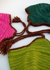
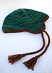

|
||
Premium Patterns Wintry Mix Mitts Love Bytes HawkeyeFree Patterns Kiddie Cadet Summerlin Ruffled Scarf Seamless DS Sock Simply Seamless Pouch Myriads of MushroomsExtras DIY Mitten Blocker Felt Patch Tutorial Yarn Dyeing Tutorial Needle Pouches Knitting Journal |
March 24, 2008 - Posted by Alice SchneblyFamily of ThorpesProject Specs The Thorpe hat is the epitome of a fun and quick pattern. I loved knitting it. Each hat took a day to knit, and then I added the crochet edgings and ties to all the hats yesterday. I am really beginning to love hats that are knit from the top down. Instead of doing a gauge swatch, I just started in on the hats and decided to go with the flow. My gauge turned out on the small side (16 st/4” instead of 14.5 stitches) and instead of ripping out my progress I took advantage of the top down method and adjusted accordingly. For Kenny’s hat, I worked an extra increase round for a total of 88 stitches. From there, the other numbers were easy to adjust. This pattern would be really fun to knit in a variety of yarn weights if you use the original pattern as a basic formula. Camdyn’s hat is knit using the numbers for the medium size, but at the same smaller gauge. I knit for 2 ½” following the increases before working the band, and it turned out being the perfect size for a three year old. I really loved being able to try the hat on Camdyn a couple times while knitting to get it just right. For Cam’s hat I used Malabrigo Worsted held doubled instead of a chunky weight yarn. This knit up at the exact same gauge as Malabrigo Chunky for me, but I think it lost a bit of impact that the semi-solid colors normally have when knit up. Instead of the gradual shift in shades, there is a more of a marled appearance. I still love the brightness of Shocking Pink, though. It is the perfect color for a little girl! One of the general changes I made while working the pattern, was to use a technique for knitting jogless garter stitch. I first used this technique when making the Simply Mittens for Kenny, though I didn’t get to really see the full effect because of the dark yarn. I am really glad I tried this out again. It is almost impossible to see the jogs between rounds. The technique is worked very similarly to Traveling Jogless Stripes. If you’re interested in trying this out, this is how you work Jogless Garter Stitch on the Thorpe hat… Knit the pattern as directed until you are ready to begin the first purled round of the brim. Remove your stitch marker that is marking the beginning of the round. Slip one stitch from left hand needle to right hand needle, purlwise with yarn in back. Replace stitch marker. Purl around (this will include the stitch that you slipped before). Remove your marker and once again slip a stitch from LH needle to RH needle. Replace marker. Knit around. You will continue in this manner, moving the start of the round over one stitch each time, until you have completed the number of garter ridges as directed by the pattern. On your next round you will be binding off stitches at the front, and from there you can work back and forth in garter stitch as normal. Now it’s nearly invisible where you changed from knit to purl rounds on the brim! No visible garter line! I think this would be a fun technique to try out on various other projects. The more and more I thought about it, I think this would work awesome for the yoke on the Cobblestone sweater if you’re not too fond of the line the garter stitch creates on the back. Of course in a large project like a sweater it would also help to keep a stitch marker at the original beginning of the round as well because you may need it as a reference for other instructions in the pattern. The last minor change I made to this pattern, was to make round 4-strand braids for the ties rather than normal braids. I love how they end up looking like woven cords. They’re really simple to do, and once I got the hang of the technique it went really fast. On Camdyn’s hat I threaded four strands of worsted weight yarn through the edge and braided each of the strands doubled over. For Kenny and my hats, I used 8 strands of yarn and so each section of the braid was four strands thick, after being doubled over. The basic principle of the 4-strand braid is under two strands, back over one. Here’s a good tutorial on this technique if you’d like to give it a try. Even though Thorpe was a simple pattern to knit, I still feel a huge sense of accomplishment. This was my first successful crochet! I bought the Stitch ‘n Bitch Happy Hooker Book a long time ago with the intent to learn how to crochet, but I could never wrap my head around it. I actually have a gorgeous hat that has been sitting around for months now awaiting a single crochet edging. I even thought about the ways that I could finish off my Thorpe hats that didn’t involve crochet, but in the end I decided it really gives the hat that extra something. I don’t know what it was, but this time when looking at the Happy Hooker, everything just seemed to make sense. Half double crochet is my friend! I still can’t do single or double crochet, but at least next time I attempt it I’ll have a little more confidence. It seems every time I read Kirsten’s blog she’s always designing something new. Most recently, her design Dr. G’s Memory Vest caught my eye. I absolutely love all the unique cables, especially the tree cable right up the front! Kenny is always asking for me to knit him a sweater vest, and this one is couldn’t be more perfect. The pattern is available by making a donation through her blog to the Fisher Center for Alzheimer's Research Foundation, and Kristen has already raised over $1000 from her pattern. How awesome is that? |
   Recent ReviewsRecent Posts
 Our Favorites
|
| © 2007 KathrynIvy.com | ||
{kind=link}
{kind=link}
{kind=link}